Multi-agent orchestration tools for building AI agents
Frameworks for teams of agents that hand work to each other, split tasks and check each other's output. Of the 647 tools on our building AI agents page, 64 fit this narrower job. By pricing: 61 open source, 1 free or freemium, 2 pricing on the maker's site. The most-starred open repos here are Ruflo (80,231 stars), MetaGPT (71,087 stars), AutoGen (61,630 stars). Most come from the frameworks (53), memory & RAG (2), coding (2) categories.
Updated
Ruflo
Open-source multi-agent meta-harness for Claude Code, Codex, and MCP clients; Oct 13 release adds Mods (mission workflows) and a single control plane with human approval.
Added
MetaGPT
Multi-agent framework that assigns roles like product manager and engineer to LLM agents to build software.
Added
AutoGen
Microsoft's framework for multi-agent conversations, now archived and no longer maintained; Microsoft points new users to Microsoft Agent Framework.
Added
CrewAI
Framework for role-based multi-agent crews.
Added
Agno
Python framework and runtime for building, running and managing multi-agent systems with memory, knowledge and tools.
Added
AgentScope
Framework for building and running transparent multi-agent applications with visual debugging.
Added
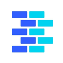
ChatDev
Zero-code multi-agent platform from OpenBMB, grown from a software-development agent company into a general multi-agent orchestration system.
Added
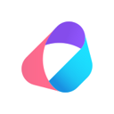
Orkes
Orchestration platform built on Conductor for durable workflows and AI agents.
Added
LangChain Deep Agents
Library for long-running agents with subagents and skills; 0.7.23 (Oct 7) adds pinned_skills.
Added
OpenAI Agents SDK (Python)
OpenAI's Python SDK for building multi-agent workflows; v0.23.0/0.23.1 released Oct 1-2.
Added
Haystack
Open-source orchestration framework for building production LLM apps, RAG and agents.
Added
Dapr
Dapr is a portable runtime for building distributed applications across cloud and edge, combining event-driven architecture with workflow orchestration
Added
Kortix CompanyOS
Kortix CompanyOS is an open-source, cloud-native agent harness for companies: always-on agents start from schedules, webhooks, app events or team messages, run in parallel swarms on their own persistent cloud computers with shared company memory, connect to 3,000+ apps and land changes through team-approved reviews.
Added
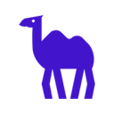
CAMEL
CAMEL, one of the first multi-agent frameworks, for building role-playing agents and large agent societies.
Added
Microsoft Agent Framework
Microsoft's framework for building and orchestrating agents and multi-agent workflows in Python and .NET.
Added
txtai
All-in-one Python framework for semantic search, LLM orchestration and agents built on an embeddings database of vector, graph and relational indexes.
Added
GSD Core
GSD Core is a spec-driven development and context-engineering framework that runs Claude Code, Codex, Cursor, Copilot and other coding agents through a discuss, plan, execute, verify and ship loop, doing heavy research and execution in fresh-context subagents to avoid context rot.
Added
Aden Hive
Multi-agent harness for production AI.
Added
Omnigent
Open-source agent framework and meta-harness that orchestrates Claude Code, Codex, Cursor and other agents together.
Added
UFO
Microsoft's desktop agent framework that operates Windows apps and orchestrates multi-device tasks as task graphs.
Added
PraisonAI
Multi-agent framework for building a self-improving AI workforce with little code.
Added
Flyte
Type-safe orchestration for agents, ML pipelines and inference on Kubernetes.
Added
Ipollowork
Enterprise-grade, local-first Agent Workbench for people and agent teams. A unified multi-engine workspace for Codex Harness, DeepSeek Harness, and OpenCode, with unified plugins and Skills, multi-agent projects and tasks, and editable code, documents, presentations, design, and video.
Added
Swarms
Enterprise multi-agent orchestration framework.
Added
Open Multi-Agent
Self-hosted TypeScript agent runtime with durable approvals and verifiable run records.
Added
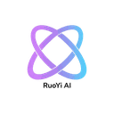
Ruoyi AI
Enterprise-grade AI agent framework with multi-provider LLM management, secure knowledge bases and high-precision RAG, visual workflow orchestration, and multi-agent coordination
Added
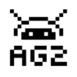
AG2
AG2, the community continuation of AutoGen, an open-source framework for multi-agent systems.
Added
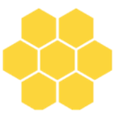
Agency Swarm
Multi-agent orchestration framework built on the OpenAI Agents SDK for creating collaborating agent "agencies" with defined roles.
Added
Dagu
Self-hostable workflow orchestrator with a simple definition format and web UI, usable for agent jobs.
Added
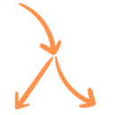
Langroid
Python framework for multi-agent programming with LLMs.
Added
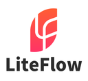
Liteflow
Liteflow is an open-source agent project that helps builders handle lightweight, fast, stable, programmable component-based rule engine — where AI Agents orchestrate.
Added
LazyLLM
Low-code framework for building multi-agent LLM applications.
Added
BeeAI Framework
Framework for building production-ready agents and multi-agent systems in Python or TypeScript.
Added
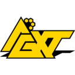
AGiXT
AGiXT is an open-source agent project that helps builders handle dynamic AI Agent Automation Platform that seamlessly orchestrates instruction management and complex.
Added
BotSharp
Multi-agent framework for .NET.
Added
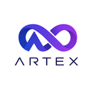
Artex Global
Artex Global is an open-source agent project that helps builders handle global edition of ARTEX — an LLM multi-agent autonomous penetration-testing framework.
Added
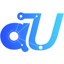
agentUniverse
Multi-agent framework with reusable collaboration patterns for building LLM agent applications.
Added
Neuron AI
PHP framework for creating and orchestrating AI agents with LLMs, tools, vector stores and memory.
Added
LangGraph4j
Java library for building stateful multi-agent applications as graphs, working with LangChain4j and Spring AI.
Added
Jido
Elixir framework for building supervised, fault-tolerant agents and multi-agent systems on the BEAM.
Added
Rulego
Rulego is an MCP server that gives agents a way to handle ⛓️ is a lightweight, high-performance, embedded, next-generation component orchestration rule engine framework.
Added
Agentlas
A local-first agent OS that keeps specialist agents in a hub and spins up a temporary orchestrator for each task, with reusable methods and your choice of model and host.
Added
Meldwork
Meldwork is an open-source agent project that helps builders handle local-first AI agent workspace for multi-agent collaboration, agent orchestration, scoped permissions, evidence-aware.
Added
KaibanJS
JavaScript-native framework for building and managing multi-agent systems with a Kanban-style board for agent tasks.
Added
Xalgorix
Xalgorix is an open-source agent project that helps builders handle autonomous AI pentesting agents — real-time reconnaissance, vulnerability detection, and exploitation orchestration.
Added
LightAgent
LightAgent: Lightweight Python framework for OpenAI-compatible agents with tools, memory, guardrails, tracing, lifecycle hooks, multi-agent collaboration, and workflows
Added
Sage
Sage is an open-source (MIT) RSI agent harness, where RSI stands for Recursive Self-Improvement: it improves agents using feedback from their tasks. Starting from a goal or a curated usage history, it runs the agent, has a separate evaluator grade the results, tunes the agent and keeps every version with its evidence, so you decide which one to adopt. It comes as a Desktop app, a multi-user Server with Agent Studio, and the SAgents Python runtime, with support for Skills, MCP, multi-agent setups and sandboxed runs with approvals.
Added
Mateclaw
Mateclaw is an open-source agent project that helps builders handle — Your second brain with Multi-Agent Orchestration, MCP Protocol, Skills & Memory.
Added
Innovation Lab Examples
Innovation Lab Examples is an open-source agent project that helps builders handle 80+ production-ready AI agent examples in Python — build autonomous agents, multi-agent.
Added
Pydantic Deep Agents
Self-hosted terminal AI assistant and Python framework on Pydantic AI, with tool calling, sandboxed execution, multi-agent teams and checkpoints.
Added
Dynamiq
Python orchestration framework for building agentic and RAG applications from reusable nodes and workflows.
Added
AgenticX
AgenticX is an open-source agent project that helps builders handle unified, production-ready multi-agent platform — Python SDK + CLI (agx) + Studio.
Added
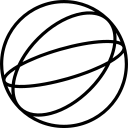
Cayu
Cayu is an open-source Python framework for building and running domain-specific, long-horizon agents on a durable runtime. Sessions survive restarts and redeploys from SQLite or Postgres stores, tool policies can require human approval before side effects, spend caps are checked before each model call, and timers, background tasks, subagents and forks cover longer multi-agent work. It is Apache 2.0 licensed.
Added
Obelisk
Obelisk is an open-source agent project that helps builders handle every past session, subagent, and workflow -- queryable by your agent, browsable.
Added
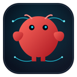
Swarmclaw
Swarmclaw is an MCP server that gives agents a way to handle AI agent runtime and multi-agent framework for autonomous agent swarms.
Added
Project Golem
Project Golem is an open-source agent project that helps builders handle OS-level autonomous AI agent with long-term memory, multi-agent coordination, Titan Chronos scheduler.
Added
Agent Wiz
A CLI tool for threat modeling and visualizing AI agents built using popular frameworks like LangGraph, AutoGen, CrewAI, and more.
Added
Crew44
Orchestrate a crew of specialist AI agents in one local-first workspace. Each role on its best model, with memory and skills that compound. Free, MIT.
Added
Pisper
Multi-agent app for parallel sessions, tools, memory, workflows, desktop, terminal, and mobile.
Added
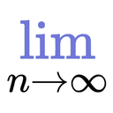
Agentark
[NeurIPS'26] Official Implementation for AgentArk: Distilling Multi-Agent Intelligence into a Single LLM Agent(https://arxiv.org/abs/2602.03955)
Added
Station
Station is an open-source agent project builders use to open-world multi-agent environment where AI agents pursue autonomous scientific discovery and build.
Added
Kheish
Kheish is an open-source agent project that helps builders handle orchestration engine for long-running, tool-using AI agents.
Added
CrewAI GUI Qt
CrewAI GUI Qt is an open-source agent project that helps builders handle node-Based Frontend for CrewAI: Revolutionizing AI Workflow Creation.
Added
HumanMirror Guard
HumanMirror Guard is an opt-in Python and JavaScript preflight SDK that gives autonomous agents in LangGraph, CrewAI, AgentKit or AutoGen an advisory risk check before they act.
Added
GitHub repos (63)
| Repo | GitHub stars | Licence | Last push |
|---|---|---|---|
| 80,231 | MIT | 2026-10-30 | |
| MetaGPT ↗ | 71,087 | MIT | 2026-01-21 |
| 61,630 | MIT for code (LICENSE-CODE); CC-BY-4.0 for documentation | 2026-10-28 | |
| CrewAI ↗ | 60,294 | MIT | 2026-10-29 |
| 42,965 | Apache License 2.0 | 2026-10-30 | |
| AgentScope ↗ | 34,932 | Apache License 2.0 | 2026-10-30 |
| ChatDev ↗ | 34,616 | Apache License 2.0 | 2026-10-30 |
| Orkes ↗ | 32,401 | Apache License 2.0 | 2026-10-29 |
| 30,785 | MIT | 2026-10-30 | |
| 30,393 | MIT | 2026-10-27 | |
| Haystack ↗ | 26,885 | Apache License 2.0 | 2026-10-30 |
| Dapr ↗ | 26,171 | Apache-2.0 | 2026-10-30 |
| 20,592 | Elastic License 2.0 (not an OSI licence) | — | |
| CAMEL ↗ | 17,996 | Apache License 2.0 | 2026-10-27 |
| 14,386 | MIT | 2026-10-30 |
Top 15 of 63 by stars. Stars and licence come from each repo, checked when the listing was last verified.
FAQ
What are the best AI tools for building AI agents focused on multi-agent orchestration?
We list 64. The first three by GitHub stars and featured status are Ruflo: Open-source multi-agent meta-harness for Claude Code, Codex, and MCP clients; Oct 13 release adds Mods (mission workflows) and a single control plane with human approval.; MetaGPT: Multi-agent framework that assigns roles like product manager and engineer to LLM agents to build software.; AutoGen: Microsoft's framework for multi-agent conversations, now archived and no longer maintained; Microsoft points new users to Microsoft Agent Framework.
Are there free or open-source options?
Yes: 61 open source, 1 free or freemium, 2 pricing on the maker's site. Pricing is as each maker states it.
More from building AI agents
Tools are grouped by what each says it does. Missing one? Submit it free.